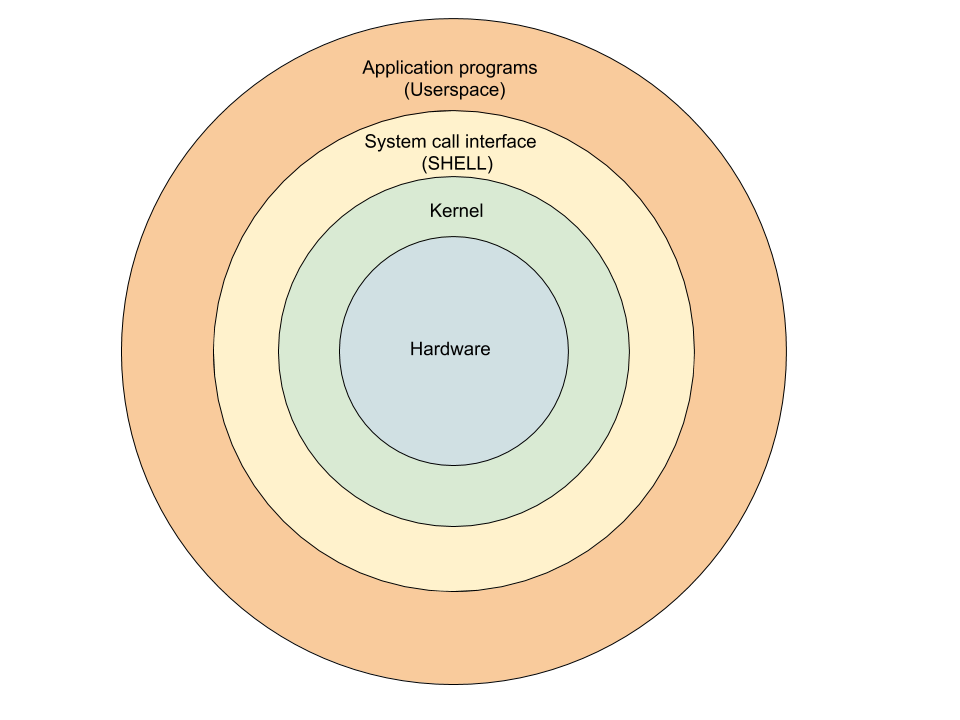

<!doctype html>
<html lang="sv">
<meta charset="utf-8" />
<title>vlinux kmom01</title>

<!-- Mithril HTML Slideshow styles -->
<link href="../../css/mithril-slideshow.css" rel="stylesheet" />

<!-- Code formatting using highlight.js -->
<link rel="stylesheet" href="../../css/default.css">
<link rel="stylesheet" href="../../css/tomorrow.css">
<script src="../../js/highlight.pack.js"></script>

<!-- Text formatting using Markdown through showdown.js -->
<script src="../../js/showdown.min.js"></script>

<style>
    h1 {
        border-bottom: 2px solid lime;
    }
    #slide {
        font-family: monospace;
        color: lime;
    }

    ul {
        list-style-type: none;
    }

    li:before {
        content: "$ ";
    }

    ul li ul li:before {
        content: "- ";
    }
</style>


<!-- Here comes the slides in order -->
<script data-role="slide" data-markdown type="text/html">
#vlinux kmom01
###Kenneth Lewenhagen, dbwebb
</script>


<!-- Slide -->
<script data-role="slide" data-markdown type="text/html">
# Agenda

* Kursens innehåll
* Historia om Linux

</script>


<!-- Slide -->
<script data-role="slide" data-markdown type="text/html">
# Kursens innehåll

* 01: Linux som server
* 02: Apache Virtual Hosts
* 03: Introduktion till Docker
* 04: En webbserver i Docker
* 05: Ett nätverk i Docker
* 06: Docker Compose
* 07/10: Projekt och examination

</script>


<!-- Slide -->
<script data-role="slide" data-markdown type="text/html">
# Historian om Linux

</script>


<!-- Slide -->
<script data-role="slide" data-markdown type="text/html">
# Unix

* 1969, AT&T Bell Labs
* Multics - time sharing OS
<figure>
    
    <figcaption style="font-size:smaller; color: white;">Ken Thompson, Dennis Ritchie</figcaption>
</figure>
* C - portable
* Unix licens

</script>


<!-- Slide -->
<script data-role="slide" data-markdown type="text/html">
# BSD

* University of California, Berkley
* Berkley Software Distribution (OS)
* 70's - 80's
* Öppne källkod, Unix-licens (kopierad kod)
* Rättegångsprocess, BSD & Unix (-80)
* (Unix-like) FreeBSD, OpenBSD, Mac OS, GNU/Linux

</script>


<!-- Slide -->
<script data-role="slide" data-markdown type="text/html">


</script>


<!-- Slide -->
<script data-role="slide" data-markdown type="text/html">
# GNU/Linux

* Richard Stallman 1983 - GNU Project
* GNU's Not Unix
* Frihet
* GNU Hurd
* Linus Torvalds 1991 - Kernel
* <strong>GNU software + Linux kernel</strong>

</script>


<!-- Slide -->
<script data-role="slide" data-markdown type="text/html">
# Var används Linux?

* Windows, MacOS
* 95% topp 1m servrar
* 85% smartphones
* Smart TV's
* Bilar
* Flygplam
* 100% av världens 500 "Supercomputers"
* 90% av publika arbetsbelastningen för molntjänster
* 90% av Hollywood’s specialeffekter.
* Facebook, Google, Twitter etc

</script>


<!-- Slide -->
<script data-role="slide" data-markdown type="text/html">
# Arkitektur (*nix)

* Userspace (application)
    * Användardefinierade program
* Shell/Commands/Standard libs (libc)
    - Medlare
    - Kommandotolk
    - Hantera systemanrop (processer, filer, enheter, information, kommunikation)
* Kernel (kärnan)
    - Samverkar direkt med hårdvaran
* Hardware
    - Processor, Minne, Skärm, HDD

</script>


<!-- Slide -->
<script data-role="slide" data-markdown type="text/html">

</script>


<!-- Slide -->
<script data-role="slide" data-markdown type="text/html">
# Desktop Environment

* Gnome, KDE, LXDE, XFCE, Cinnamon etc
* Window manager (WM)
* X Window System, X11, (X.Org)

</script>


<script data-role="slide" data-markdown type="text/html">
# Lycka till!
</script>


<!-- include essential js-script -->
<script src="../../js/mithril.min.js"></script>
<script src="../../js/mithril-slideshow.js"></script>
<!-- default to theme 3 -->
<script>app.useTheme(3);</script>

</html>
